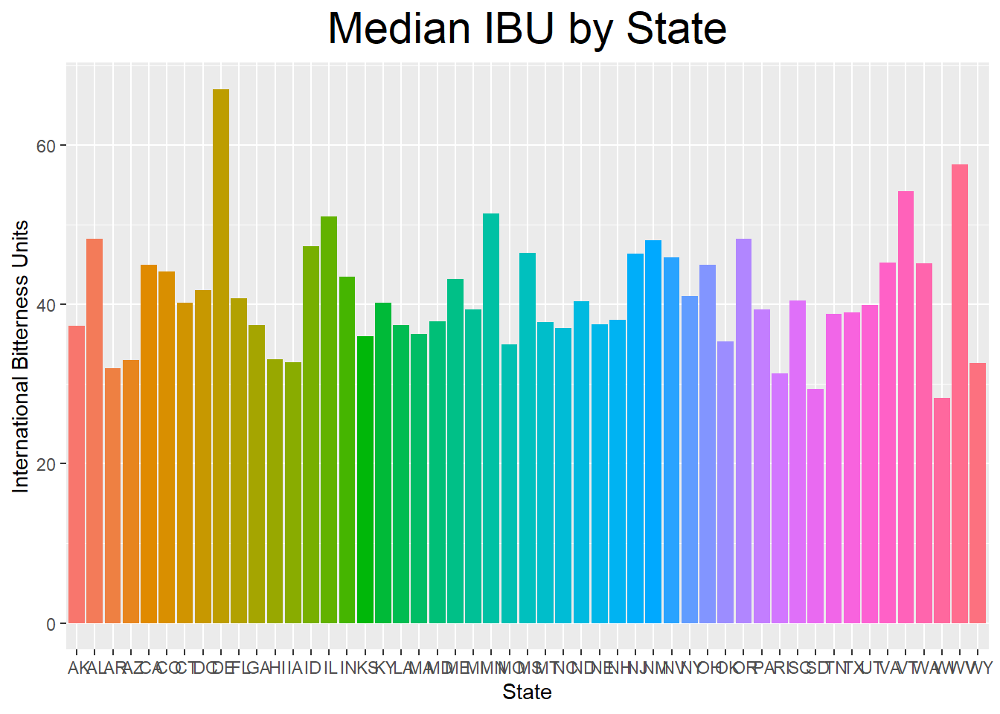

The goal of this project was to analyze data on 2410 craft beers created in 558 breweries across the United # States to determine any additional opportunities for Budweiser. Data collected included alcohol by Volume (ABV), International Bitterness Units (IBU) and the Style of each craft beer.
##—— ## Load needed libraries ## Read Spreadsheets: Breweries and Beers ##
library(tidyverse)## Warning: package 'tidyverse' was built under R version 3.6.2## -- Attaching packages --------------------------------------- tidyverse 1.3.0 --## v ggplot2 3.2.1 v purrr 0.3.3
## v tibble 2.1.3 v dplyr 0.8.3
## v tidyr 1.0.2 v stringr 1.4.0
## v readr 1.3.1 v forcats 0.4.0## Warning: package 'tidyr' was built under R version 3.6.2## Warning: package 'purrr' was built under R version 3.6.2## Warning: package 'stringr' was built under R version 3.6.2## -- Conflicts ------------------------------------------ tidyverse_conflicts() --
## x dplyr::filter() masks stats::filter()
## x dplyr::lag() masks stats::lag()library(ggplot2)
library(stringr)
library(dplyr)
library(caret)## Warning: package 'caret' was built under R version 3.6.2## Loading required package: lattice##
## Attaching package: 'caret'## The following object is masked from 'package:purrr':
##
## liftlibrary(class)## Warning: package 'class' was built under R version 3.6.2breweries <- read.delim("C:/School Stuff/DS/Doing DS/Project1/breweries.csv",header=TRUE,sep=",")
beer <- read.delim("C:/School Stuff/DS/Doing DS/Project1/beers.csv",header=TRUE,sep=",")breweries %>% ggplot(aes(x = State,fill=State )) +
geom_bar(stat = "count") +
ggtitle("Count of Breweries by State") + ylab("Count of Breweries")+ theme(legend.position="none")+
theme(plot.title = element_text(hjust = 0.5))+ theme(plot.title = element_text(size=22))Merge Beer and Brewery datasets and show first 6 and last 6 Rows. Note that this is repeated after the data is cleansed to handle missing values
brewbeer <- merge(beer,breweries,by.x="Brewery_id", by.y = "Brew_ID")
head(brewbeer,6)## Brewery_id Name.x Beer_ID ABV IBU Style Ounces
## 1 1 Get Together 2692 0.045 50 American IPA 16
## 2 1 Maggie's Leap 2691 0.049 26 Milk / Sweet Stout 16
## 3 1 Wall's End 2690 0.048 19 English Brown Ale 16
## 4 1 Pumpion 2689 0.060 38 Pumpkin Ale 16
## 5 1 Stronghold 2688 0.060 25 American Porter 16
## 6 1 Parapet ESB 2687 0.056 47 Extra Special / Strong Bitter (ESB) 16
## Name.y City State
## 1 NorthGate Brewing Minneapolis MN
## 2 NorthGate Brewing Minneapolis MN
## 3 NorthGate Brewing Minneapolis MN
## 4 NorthGate Brewing Minneapolis MN
## 5 NorthGate Brewing Minneapolis MN
## 6 NorthGate Brewing Minneapolis MNtail(brewbeer,6)## Brewery_id Name.x Beer_ID ABV IBU Style Ounces
## 2405 556 Pilsner Ukiah 98 0.055 NA German Pilsener 12
## 2406 557 Heinnieweisse Weissebier 52 0.049 NA Hefeweizen 12
## 2407 557 Snapperhead IPA 51 0.068 NA American IPA 12
## 2408 557 Moo Thunder Stout 50 0.049 NA Milk / Sweet Stout 12
## 2409 557 Porkslap Pale Ale 49 0.043 NA American Pale Ale (APA) 12
## 2410 558 Urban Wilderness Pale Ale 30 0.049 NA English Pale Ale 12
## Name.y City State
## 2405 Ukiah Brewing Company Ukiah CA
## 2406 Butternuts Beer and Ale Garrattsville NY
## 2407 Butternuts Beer and Ale Garrattsville NY
## 2408 Butternuts Beer and Ale Garrattsville NY
## 2409 Butternuts Beer and Ale Garrattsville NY
## 2410 Sleeping Lady Brewing Company Anchorage AKThis will impute values for missing IBU Values This was done by calculating and averaging the Alpha Acid * Boil Time by Beer Style and imputing IBU Values based on this average ABT was averaged by Style
IBUTrain = filter(beer,(!is.na(beer$IBU)))
IBUTrain$AABT <- (IBUTrain$IBU*7.25)/IBUTrain$Ounces
###this gives us mean AABT by style
AABTMEAN <-IBUTrain %>% group_by(Style) %>% summarise( meanAABT = mean(AABT))
#merge the blank with AABT avgs table by style
Beerwithaabt <-merge(beer,AABTMEAN,by="Style",all.x=TRUE)
##calculate the IBU based off style avg of AABT
Beerwithaabt$AVG_IBU <- (Beerwithaabt$Ounces*Beerwithaabt$meanAABT)/7.25The following will calculate an average ABV by Style to use for missing values.
ABVTrain = filter(beer,(!is.na(beer$ABV)))
ABVbyStyle <- as.data.frame(ABVTrain %>% group_by(Style) %>% summarise(meanABV = mean(ABV)))
beerwavgs <- merge(Beerwithaabt,ABVbyStyle, by = "Style",all.x = TRUE)Add in the Derived ABV and IBU values and omit any rows where IBU could not be calculated because there was no training data. In other words, there were no rows with valid IBU data for that particular style of beer
Calculate drvIBU and drvABV fields in final Beer dataset so that we have a value for ABV and IBU to use for all rows
beerfnl1 <- mutate(beerwavgs,drvIBU=ifelse(is.na(IBU),AVG_IBU,IBU))
beerfnl <- mutate(beerfnl1,drvABV=ifelse(is.na(ABV),meanABV,ABV))
#omit remaining null averaged IBU because there was no data to train on. Mostly Cider
beerfnl2 <- filter(beerfnl,!is.na(drvIBU))Merge with Breweries. Get rid of Missing Style.
brewdata <- filter(merge(beerfnl2,breweries,by.x="Brewery_id", by.y = "Brew_ID"),!is.na(Style))### Compute the median alcohol content and international bitterness unit for each state. Plot a bar chart to compare.
brewdata2 <- as.data.frame(brewdata %>% group_by(State) %>% summarise(medibu = mean(drvIBU)))
brewdata3 <- as.data.frame(brewdata %>% group_by(State) %>% summarise(medabv = mean(drvABV)))
brewdata4 <- merge(brewdata2,brewdata3,by="State",all.x=TRUE)
### Question 4
### Graph median IBU and Median ABV by state
brewdata4 %>% ggplot(aes(x = State, y = medibu, fill=State)) +
geom_bar(stat = "identity", ) +
ggtitle("Median IBU by State") +
xlab ("State") +
ylab ("International Bitterness Units") +
theme(legend.position="none")+
theme(plot.title = element_text(hjust = 0.5))+ theme(plot.title = element_text(size=22))
brewdata4 %>% ggplot(aes(x = State, y = medabv, fill=State)) +
geom_bar(stat = "identity", ) +
ggtitle("Median ABV by State") +
xlab ("State") +
ylab ("Alcohol by Volume") +
theme(legend.position="none")+
theme(plot.title = element_text(hjust = 0.5))+ theme(plot.title = element_text(size=22))### Question 5
### Highest IBU in Breweries: #1: Delaware - 67 1 brewery that makes 2 beer types have the highest IBU, followed by West Virginia (57.5)
### West Virginia has 1 brewery that makes 2 beer types and Delaware has two breweries that produces 1 beer type each
### Breweries in NV (.0662) and DC (.0656) have the highest alcohol content DC has only one brewery, and NV has 2 breweries.
#### Scaled IBU and ABV - not really used #####
brewdata4$scaledibu = scale(brewdata4$medibu,center=FALSE, scale=TRUE)
brewdata4$scaledabv = scale(brewdata4$medabv,center=FALSE, scale=TRUE)
### Make ABV Factors to graph ABV and IBU on same plot
brewdata4$abv_factor = cut(brewdata4$medabv, breaks = c(.05,.057,.059,.062,.069), labels = c("< .057",".057 to .059", ".059 to .062","Above .062"))
brewdata4 %>% ggplot(aes(x = State, y = scaledibu, fill=factor(abv_factor))) +
geom_bar(stat = "identity",position="jitter" ) +
ggtitle("Median IBU by State and ABV") +
xlab ("State") +
ylab ("IBU") ### Question 6 Distribution of ABV
### Regardless of style, most beers have an Alcohol by Volume between 4.9% and 5.9%.
### We believe that consumers are more likely concerned with bitterness (IBU) of beer rather than the Alcohol Content as evidenced by the distribution below.
### Question 7
#### Scatterplot showing relationship between ABV and IBU.
####
brewdata %>% ggplot(mapping = aes(x = drvABV, y = drvIBU)) +
geom_point(position = "jitter",col="Blue") +
ggtitle("Derived ABV by Derived IBU") +
xlab ("Alcohol By Volume") +
ylab ("International Bittering Units") brewdata %>% ggplot(aes(x = ABV)) + geom_histogram(color='black',fill='darkslategray3') + ggtitle("Histogram of ABV")## `stat_bin()` using `bins = 30`. Pick better value with `binwidth`.## Warning: Removed 62 rows containing non-finite values (stat_bin).##### Question 8 Create a varaible named Type. Narrow our analysis to IPA and ALE. We will be creating a reduced dataset called “final” for this analysis The point of this exercise is to show that stat difference exist between IPA and Ale, so we can use KNN to classify a beer as Ale or IPA. We have confidence in KNN because of the results of the confusionmatrix.
final <-brewdata %>% filter(grepl("IPA|India Pale Ale|\\bAle\\b",brewdata$Style))
final$TYPE <-ifelse(str_detect(final$Style,"IPA|India Pale Ale"),"IPA","Ale")
final$TYPE <-as.factor(final$TYPE)
#cleaning up dataframe
final<-data.frame(Brewery_id =final$Brewery_id, Beer_name = final$Name.x, Beer_ID = final$Beer_ID, Ounces = final$Ounces, drvIBU = final$drvIBU,
drvABV = final$drvABV, Brewery_name = final$Name.y, City = final$City, State = final$State, Style = final$Style, Type = final$TYPE)
final <-na.omit(final)
#graph of Type of Beers..IPA VS ALE
final %>% ggplot(mapping =aes (x= scale(drvIBU), y= scale(drvABV),col= Type)) +
geom_point(position='jitter') +
ggtitle("Derived ABV by IBU and Beer Type (Ale or IPA)") +
xlab ("Derived IBU") +
ylab ("Derived ABV") +
geom_smooth(method='lm')+
theme(plot.title = element_text(hjust = 0.5))+ theme(plot.title = element_text(size=22))# Create Train and Test set for KNN in order to classify beer as IPA or ALE
splitPerc = .7
trainfinal = sample(1:dim(final)[1],round(splitPerc * dim(final)[1]))
train = final[trainfinal,]
test = final[-trainfinal,]
classifications = knn(train[,c(5,6)],test[,c(5,6)],train$Type,prob = TRUE, k =20)
confusionMatrix(test$Type,classifications)## Confusion Matrix and Statistics
##
## Reference
## Prediction Ale IPA
## Ale 266 31
## IPA 22 141
##
## Accuracy : 0.8848
## 95% CI : (0.852, 0.9125)
## No Information Rate : 0.6261
## P-Value [Acc > NIR] : <2e-16
##
## Kappa : 0.7513
##
## Mcnemar's Test P-Value : 0.2718
##
## Sensitivity : 0.9236
## Specificity : 0.8198
## Pos Pred Value : 0.8956
## Neg Pred Value : 0.8650
## Prevalence : 0.6261
## Detection Rate : 0.5783
## Detection Prevalence : 0.6457
## Balanced Accuracy : 0.8717
##
## 'Positive' Class : Ale
## #filter out the data in order to perform Ttest on the Ale & IPA mean to show they are different. The results of the ttest show IPA & ABV have different profiles for IBV & ABV
#this gives us more confidence in using KNN to classify a beer as ALE or IPA because there is a stat difference between the beers.
Ale <- final %>% filter(Type == "Ale")
IPA <- final %>% filter(Type =="IPA")
t.test(x=Ale$drvIBU,y=IPA$drvIBU)##
## Welch Two Sample t-test
##
## data: Ale$drvIBU and IPA$drvIBU
## t = -39.398, df = 1081.7, p-value < 2.2e-16
## alternative hypothesis: true difference in means is not equal to 0
## 95 percent confidence interval:
## -40.26259 -36.44243
## sample estimates:
## mean of x mean of y
## 34.30096 72.65347t.test(x=Ale$drvABV,y=IPA$drvABV)##
## Welch Two Sample t-test
##
## data: Ale$drvABV and IPA$drvABV
## t = -19.151, df = 1099.8, p-value < 2.2e-16
## alternative hypothesis: true difference in means is not equal to 0
## 95 percent confidence interval:
## -0.01327464 -0.01080731
## sample estimates:
## mean of x mean of y
## 0.05675783 0.06879880### An ordinary linear regresssion and the graph above show that there is a significant interaction between ABV and IBU when determining the Type of beer to be Ale or IPA
final$type1 = ifelse(final$Type=='Ale',1,0)
ols <- lm(final$type1 ~ final$drvIBU + final$drvABV + final$drvABV:final$drvIBU)
summary(ols)##
## Call:
## lm(formula = final$type1 ~ final$drvIBU + final$drvABV + final$drvABV:final$drvIBU)
##
## Residuals:
## Min 1Q Median 3Q Max
## -0.90845 -0.20633 -0.00286 0.20285 1.29831
##
## Coefficients:
## Estimate Std. Error t value Pr(>|t|)
## (Intercept) 1.58311 0.08760 18.073 < 2e-16 ***
## final$drvIBU -0.01957 0.00163 -12.004 < 2e-16 ***
## final$drvABV -4.82410 1.49258 -3.232 0.001255 **
## final$drvIBU:final$drvABV 0.09138 0.02375 3.847 0.000125 ***
## ---
## Signif. codes: 0 '***' 0.001 '**' 0.01 '*' 0.05 '.' 0.1 ' ' 1
##
## Residual standard error: 0.334 on 1529 degrees of freedom
## Multiple R-squared: 0.5239, Adjusted R-squared: 0.523
## F-statistic: 560.9 on 3 and 1529 DF, p-value: < 2.2e-16Since there more Ale beers within the dataset, we believe that consumers have a higher demand for Ale beer than an IPA. Perhaps majority of consumers consider IPA to be to bitter. We have identified the Ale beer market as an area to enter. Budweiser should create an Ale beer with the median ABV and IBU profile of Ale beer. They should only enter states that have ale breweries between 26 and 12. This range provides them the opportunity to gain a market share of a growing taste preference for Ale Beer. If Budweiser enter a state outside of this range, then they may not be competitive due to oversaturated or lack of interest from consumers. Further analysis of state to state migration needs to be done for states with lower number of breweries.
#overall summary of Ale vs Beer
### Graph of current Ale beers by location with ABV < .06
####
filter(final,drvABV < .06 ) %>% ggplot(aes(x = State, fill=Type)) +
geom_bar(stat = "count",position='stack' ) +
ggtitle("Number of Beers by State with ABV < .06") +
xlab ("State") +
ylab ("Count of Beers Produced with ABV < .06")#graph of Ale breweries in USA
Aledata = Ale %>% group_by(State) %>% summarise(counts = n())
Aledata %>%ggplot(aes(x =reorder(State, -counts), y = counts)) +geom_bar(stat = "identity",fill="darkred")+ggtitle("Count of Ale Breweries by State") + ylab("Count of Breweries")+xlab("States")+
theme(plot.title = element_text(hjust = 0.5))